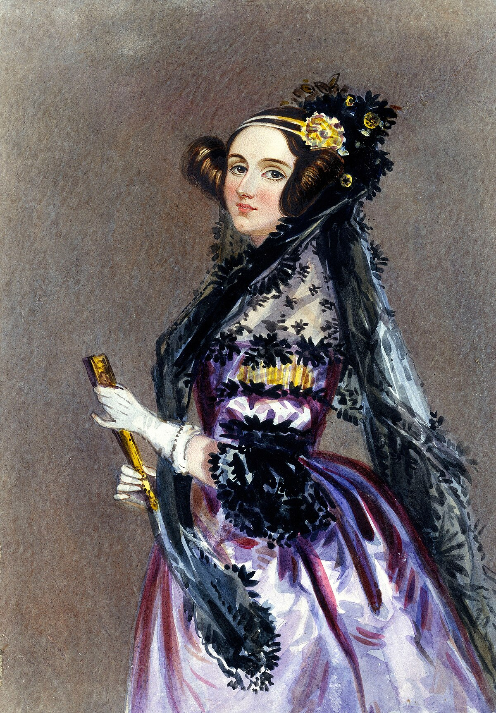
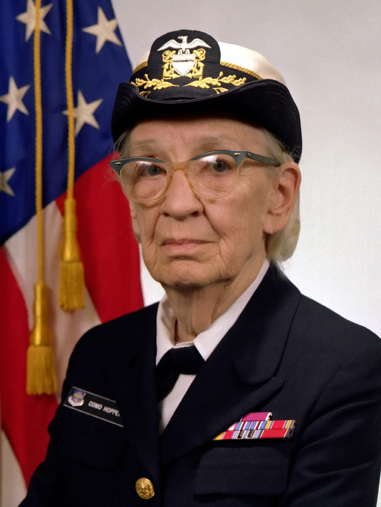

Ada Lovelace
Ada Lovelace is widely considered the first computer programmer in history — and this was back in the 1800s. She worked with Charles Babbage on a machine called the Analytical Engine, which was an early idea of a computer. While Babbage built the hardware concept, Ada saw something more — she imagined the machine being able to follow instructions, or what we now call a program. She wrote the first published algorithm meant to be carried out by a machine and imagined that computers could someday create music or visual art — decades before the first actual computer existed.
Alan Turing

Alan Turing was a British mathematician and logician who helped create the foundation for modern computing. During World War II, he worked at Bletchley Park to crack the Enigma code used by the Nazis, which played a huge role in winning the war. He designed the "Turing Machine," a model that helped define how all computers work today — by reading, processing, and writing information. His ideas also sparked the beginnings of Artificial Intelligence, and the “Turing Test” is still used today to judge whether a machine can think like a human.
Grace Hopper
Grace Hopper was a U.S. Navy Rear Admiral and a true pioneer in software development. She believed computers should be able to understand human-like instructions, not just machine code. She helped create the first compiler, which translates readable code into instructions a computer can follow, and was one of the main developers behind COBOL, a programming language still used today in finance and government. She also popularized the term "debugging" after removing a literal moth from a machine. Hopper made programming more accessible and was a huge force in shaping the modern software industry.
More Modern Legends
We also can’t forget modern icons like Bill Gates, Steve Jobs, and Tim Berners-Lee. Gates co-founded Microsoft and brought personal computing to homes across the world. Jobs, with Apple, helped redefine design and user experience with the Mac, iPhone, and iPad. And Tim Berners-Lee? He invented the World Wide Web — yes, the actual web — allowing people to connect, share, and build the internet as we know it today. Each of these people made technology more useful, powerful, and personal for everyone.

Steve Jobs
Bill Gates

Tim Berners-Lee